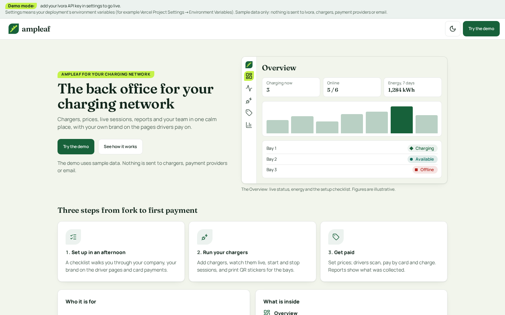

7. Landing and states
The landing page says what the app is and has one sign-in action. The states page shows the empty, loading and error pattern for Live, Chargers, Pricing and Reports.

What changes and why
- Landing: one headline, one sentence, Sign in primary, three plain cards.
- Empty: an icon, a sentence and one next step. Loading: a skeleton that matches the layout. Error: what happened, is data safe, try again.
- Second mock file: states.
Follows
- Squid: empty and error states (error says what is safe) and its landing page tone.
Accessibility
- Text pairs are palette v2 pairs already checked at 4.5:1 or more in light and dark (tests/contrast.test.ts); no new pair is introduced.
-
Keyboard order follows the visual order: skip link, navigation,
page header, primary action, then content. Tabs use arrow keys;
table sort heads are buttons with
aria-sort. - Focus: the existing 3 px token ring on every control; tap targets 44 px (36 px on dense table actions, with 44 px on a phone).
- Status is a shape, a word and a colour; charts have a text equivalent.
- Loading uses a status role; errors use an alert role; motion stops under reduced-motion.
Brand tokens
- Landing name and hero text come from OPERATOR_NAME and brand tokens.
Build size
S Shared state components, used by every list page.
Demo data only. Current screens are the shipped template's own screenshots (docs/screens).